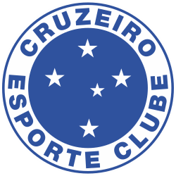

Welcome to Cruzeiro Esporte Clube, one of the greatest football clubs in Brazil. Here, passion, tradition, and pride come together to create a unique history.
Founded in 1921, Cruzeiro has built a legacy of victories, unforgettable moments, and legendary players. Our blue stars shine not only on the crest, but also in the hearts of millions of fans around the world.
This is more than a football club — it is a symbol of strength, unity, and love for the game.
Cruzeiro Esporte Clube was founded in 1921 in Belo Horizonte, Brazil, originally under the name Palestra Itália. Created by Italian immigrants, the club quickly grew and became one of the most important teams in the region.
In 1942, during World War II, the club changed its name to Cruzeiro, inspired by the Southern Cross constellation, which is also featured on its crest. This change marked the beginning of a new era in the club’s history.
Over the decades, Cruzeiro established itself as one of the most successful clubs in Brazilian football. Known for its attacking style and talented players, the team won major national and international titles, including the Copa Libertadores and multiple Brazilian championships.
More than just victories, Cruzeiro built a strong identity based on passion, resilience, and a deep connection with its fans. Today, the club continues to honor its rich history while looking toward the future.
see moreCruzeiro Esporte Clube is one of the most successful teams in Brazilian football, with an impressive collection of national and international titles.
The club has won the prestigious Copa Libertadores twice, becoming one of the top teams in South America. On the national stage, Cruzeiro has secured multiple Brazilian Championship titles and stands out as one of the greatest winners of the Copa do Brasil.
In addition to these major achievements, Cruzeiro has a long history of success in regional competitions, especially the Campeonato Mineiro, where the club has won numerous titles over the years.
Each trophy represents moments of glory, dedication, and passion from players, staff, and fans. These achievements have helped build Cruzeiro’s legacy as a giant in football, respected both in Brazil and around the world.
Cruzeiro Esporte Clube has always been home to great talents who have made history in Brazilian football. Throughout the years, legendary players have worn the club’s jersey, leaving a legacy of skill, passion, and unforgettable moments.
Icons such as Tostão, Dirceu Lopes, Alex, and Fábio helped build the club’s identity and inspired generations of fans with their performances and dedication.
Today, Cruzeiro continues to develop and showcase talented players, combining experienced leaders with young prospects. The current squad represents the club’s values of hard work, commitment, and love for the game.
Every player who represents Cruzeiro carries the responsibility of honoring its tradition and fighting for victory in every match.
I chose Cruzeiro Esporte Clube because it is more than just a football team to me — it is a part of who I am. Cruzeiro is not only about matches, titles, or players; it is about passion, identity, and a love that cannot be explained.
This club represents my emotions, my memories, and my dreams. In every victory, I feel pure joy. In every difficult moment, my love only grows stronger. Supporting Cruzeiro is not a choice I made once — it is something I carry with me every single day.
Cruzeiro is my life. It is my pride, my passion, and my heart. No matter what happens, my love for this club will never change.
Forever Cruzeiro. 💙